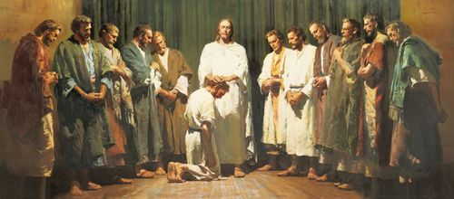

History of Revelation
Early Prophets
God's servants have been receiving revelation from Him since the beginning of the world. Adam and Eve received revelation to learn God's commandments while in the Garden of Eden and after they were cast out. Abraham, Isaac, Jacob, Moses, and many other prophets from the Old Testament received revelation. Even Jesus Christ Himself received revelation during His time in mortality carrying out His ministry. Through this revelation, God's people were guided to walk in the light as they leaned on His knowledge and wisdom to follow the Plan of Salvation.
The Great Apostasy
Following the death of Christ, Peter was left to lead the Church, having been given the keys and authority to be God's prophet and receive revelation for the Church. Sadly, Peter, and the other apostles holding priesthood authority on the earth continued to be persecuted and were killed before the authority could be passed on. The apostles had spent their time after Christ's death trying to keep the growing Church together and prevent them from following false doctrine. Many faithful followers tried to maintain the Church after the apostles, but were never given the authority to receive the revelation necessary for leading Christ's church.
Turn from Revelation
As time went on, the original gospel doctrines as taught by Jesus Christ were changed more and more as people tried to keep the Church going without revelation. The need for revelation was seen as less important, and many important eternal truths were lost or changed. This diminished view on revelation was heavily impacted and a partial result of the influence of Greek philosophical thought.
"When Catholic theologians incorporated Greek thought into christian doctrine they had to alter the traditional idea of revelation to make the transplant fit. well revealed truth had traditionally been the only important knowledge, they made it merely a foundation for important knowledge. Whereas rabbis had memorized and dissected scripture in order to understand every nuance of its meaning, theologians began using it as a set of basic ideals and assumptions upon which the Greek philosophical and cosmological systems could be built - a decision whose flaws galileo and others later made obvious. While the Jews saw revelation as a complete and perfect law, the Catholic saw it as a completion and perfection of philosophy" - (Unifying Truth: The Conflict Between Reason and Revelation, Alan Hurst)
The Christian Creeds
This turn away from the perceived need for revelation led to the creation of the Christian Creeds. These creeds came from the councils of important clergy and rulers of the day coming together to discuss their thoughts on the nature of God. Examples of some of the most important ones are included below:
- Apostle's Creed (3rd Century)
- Much of the core doctrine still intact
- Nicene Creed (4th Century)
- Start to lose individual being of Christ
- Chalcedonian Creed (5th Century)
- Strong emphasis on Jesus Christ and God as the same being
- Athanasian Creed (5th Century)
- Even stronger emphasis on Heavenly Father, Jesus Christ, and the Holy Ghost as one and the same
The long period of time without revelation to lead God's church led to much confusion and the creation of many Christian churches with conflicting beliefs. It was impossible to know where one could find God's truth.